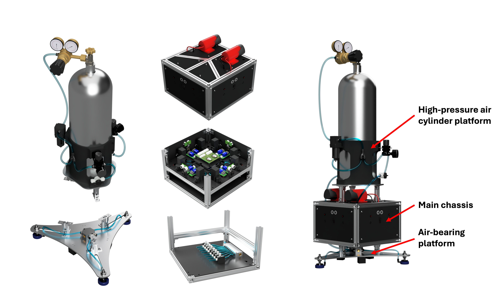

Simulation-to-Hardware Validation of MPC
Aevar Andri Amundinusarson Oefjoerd
M.Sc. Mechanical Engineering, University of Kentucky
Committee: Dr. Hasan Poonawala · Dr. Michael Seigler · Dr. Jesse Hoagg
Your browser does not support the video tag.
Video is sped up 2.5× — actual mission duration: ~3 minutes
Outline
Part 1: Problem, motivation, research questions, approachPart 2: System – physical platform and simulation setupPart 3: Math and MPC – what is solved every control stepPart 4: Results – simulation vs hardware and answers to the questionsBackup slides:
The number of satellites in orbit is increasing rapidly, and the need for
inspection and proximity-operations satellites is growing with it.
This thesis demonstrates how a small planar “inspection satellite”
can be controlled in 2D using:
A Model Predictive Control (MPC) algorithm
Binary (on/off) thrusters
The focus is on contributing to inspection-satellite technology by
demonstrating controlled inspection-type maneuvers with a realistic actuator setup.
Inspection satellites must:
Perform precise maneuvers for inspection and proximity operations.
Respect strict path and pointing constraints around other spacecraft.
Operate with limited propellant and tight fuel budgets.
Binary thrusters:
Actuators are either fully ON or fully OFF .
Thrust level is not continuously adjustable during operation.
Individual thrusters are not identical due to plumbing and hardware differences.
Control problem involves discrete inputs, asymmetric actuators, and strict constraints.
Control objective
Follow a planned trajectory in 2D (position + heading).
Respect velocity and rotation limits.
Use binary, asymmetric thrusters efficiently.
Why Model Predictive Control?
Predicts future motion over a finite horizon.
Explicitly enforces state and input constraints.
Handles binary thrusters directly via mixed-integer optimization.
Quadratic cost + binary variables → MIQP → predictable solve times.
Alternatives considered
PID / LQR: No explicit binary or fuel modeling, constraints handled indirectly.Bang–bang: Hard to tune, no formal constraint guarantees.Nonlinear MPC (MINLP): More accurate but computationally expensive with unpredictable solve times.
Prior work on spacecraft MPC
MPC for spacecraft widely studied, but often with continuous or relaxed thruster models.
Binary thruster constraints sometimes handled by rounding or pulse-width modulation after solving.
Hardware validation of mixed-integer MPC with true on/off thrusters is less common.
Gap addressed by this thesis
Explicit binary decisions: Thrusters modeled as \(u_i \in \{0,1\}\) inside the optimization.Calibrated asymmetry: Each thruster's measured force used directly in the model.Simulation-to-hardware validation: Same controller code, same model, compared on both platforms.
Model accuracy for tuning:
Compensation for asymmetric thrusters:
Real-time feasibility of mixed-integer MPC:
Build a planar “inspection satellite” testbed:
Air-bearing platform with eight calibrated on/off thrusters.
Develop an MPC controller using:
A linear planar model with an input matrix updated from the current heading.
Explicit binary thruster decisions.
Constraints on velocities and rotation.
Implement the same MPC and model in:
A simulation environment.
The real hardware system.
Run the same inspection mission in simulation and on hardware and compare:
Trajectory tracking.
Per-thruster and total thruster usage.
Solve times and real-time performance.
Main chassis
Cubic structure, approximately 290 × 290 × 150 mm.
Houses thrusters, manifolds, valves, tubing, and onboard electronics.
Air-bearing platform
Mounted to the bottom of the chassis.
Creates a thin air film between the platform and floor.
Provides nearly frictionless planar motion.
High-pressure air cylinder platform
Holds compressed-air cylinder and pressure regulators.
Supplies air to thrusters and air bearings.

Testing area
6 m × 6 m epoxy-coated floor.
Flat, smooth surface designed for air-bearing operation.
Large enough for inspection-style trajectories.
Sensing
Optical motion-capture system measures pose \((x, y, \theta)\) in the world frame.
Reflective markers on the chassis define the body frame.
Pose streamed in real time to the ground-station computer.
Computing and communication
Ground-station computer:
Receives motion-capture data and builds state \(\mathbf{x}_k\).
Solves the MPC MIQP every 60 ms.
Sends thruster on/off commands via wireless link.
Onboard electronics:
Decode commands from the ground station.
Activate the eight solenoid valves according to MPC output.
Layout
Eight thrusters located at known positions around the chassis.
Directions chosen to provide both translation and rotation authority.
Calibration
Effective thrust of each thruster measured at operating pressure.
Asymmetries (≈10% or more) are preserved in the model.
Role in control
Calibrated forces and lever arms are used to construct the input matrix \(B(\theta_k)\).
MPC uses this information to optimally select thruster firings.
Hardware loop (every 60 ms)
Motion capture measures pose \((x, y, \theta)\).
Ground station constructs state vector
\[
\mathbf{x}_k =
\begin{bmatrix}
x & y & \theta & v_x & v_y & \omega
\end{bmatrix}^\top.
\]
MPC solves a MIQP to compute binary thruster commands \(\mathbf{u}_k\).
Commands are sent to the hardware satellite and applied for the next 60 ms.
Simulation loop (every 60 ms)
Linear dynamics model updates the simulated state \((x, y, \theta)\) using \(\mathbf{u}_k\).
Ground station constructs state vector
\[
\mathbf{x}_k =
\begin{bmatrix}
x & y & \theta & v_x & v_y & \omega
\end{bmatrix}^\top.
\]
MPC solves a MIQP to compute binary thruster commands \(\mathbf{u}_k\).
Commands are sent to the simulated satellite and applied for the next 60 ms.
What information the controller has
Current state \((x, y, \theta)\) of the satellite in world frame
Position and force vectors of the thrusters in body frame
A target state
What the controller decides
Which thrusters to fire at each time step
Objectives (minimize)
Tracking error — get close to target
Fuel usage — don't waste propellant
Thruster switching — reduce wear
The approach: Model Predictive Control
Every 60 ms:
Measure/Estimate the current state
Predict the state over the next N steps
Find the best thruster commands to reach the target state
Apply the first command, then repeat the loop
Key requirement:
We need a mathematical model that predicts how thruster firings affect the satellite's motion to estimate the effects of control inputs.
The next slides build this model step by step.
The problem
Thrusters are fixed to the satellite body
Each thruster produces force \(\mathbf{f}_i^{\text{body}}\) in a known direction
But we predict motion in the world frame (lab coordinates)
The solution: rotation matrix
\[
\mathbf{f}_i^{\text{world}} = R(\theta) \, \mathbf{f}_i^{\text{body}}
\]
\[
R(\theta) =
\begin{bmatrix}
\cos\theta & -\sin\theta \\
\sin\theta & \cos\theta
\end{bmatrix}
\]
Example
A thruster pointing "forward" in body frame:
At \(\theta = 0°\): pushes in +x world direction
At \(\theta = 90°\): pushes in +y world direction
At \(\theta = 180°\): pushes in −x world direction
Why this matters
The rotation depends on the current heading \(\theta_k\)
This is why our input matrix \(B\) depends on \(\theta\)
Same thruster command → different world-frame effect depending on orientation
Six quantities define the satellite's state
\[
\mathbf{x}_k =
\begin{bmatrix}
x \\ y \\ \theta \\ v_x \\ v_y \\ \omega
\end{bmatrix}
=
\begin{bmatrix}
\text{x position} \\
\text{y position} \\
\text{heading angle} \\
\text{x velocity} \\
\text{y velocity} \\
\text{angular velocity}
\end{bmatrix}
\]
Subscript \(k\) = discrete time step (every 60 ms).
Hardware: measured by OptiTrack
\(x_k, y_k, \theta_k\): directly from motion capture (every 8.33 ms)
Velocities via finite differences:
\[
v_{x,k} = \frac{x_k - x_{k-1}}{\Delta t}, \quad
v_{y,k} = \frac{y_k - y_{k-1}}{\Delta t}, \quad
\omega_k = \frac{\theta_k - \theta_{k-1}}{\Delta t}
\]
Simulation: computed from dynamics
Integrate net forces and torques:
\[
v_{x,k+1} = v_{x,k} + \frac{F_x}{m} \Delta t, \quad
v_{y,k+1} = v_{y,k} + \frac{F_y}{m} \Delta t
\]
\[
x_{k+1} = x_k + v_{x,k} \Delta t, \quad
y_{k+1} = y_k + v_{y,k} \Delta t
\]
\[
\omega_{k+1} = \omega_k + \frac{\tau}{I_z} \Delta t, \quad
\theta_{k+1} = \theta_k + \omega_k \Delta t
\]
where \(F_x = \sum_i f_{ix}^{\text{world}}\), \(F_y = \sum_i f_{iy}^{\text{world}}\), \(\tau = \sum_i \tau_i\)
Same MPC code receives \(\mathbf{x}_k\) from either source.
Eight binary thruster commands
\[
\mathbf{u}_k =
\begin{bmatrix}
u_1 \\ u_2 \\ u_3 \\ u_4 \\ u_5 \\ u_6 \\ u_7 \\ u_8
\end{bmatrix}
\quad \text{where } u_i \in \{0, 1\}
\]
\(u_i = 0\): thruster \(i\) is OFF
\(u_i = 1\): thruster \(i\) is ON
No partial thrust — this is what makes the problem "mixed-integer."
Thruster layout
8 thrusters at known positions around chassis
Each has a calibrated force magnitude
Each has a fixed direction (in body frame)
Some pairs produce pure translation, some pairs produce rotation
What MPC decides
For each of the next N=12 time steps, which of the 8 thrusters should be ON?
That's 8 × 12 = 96 binary decisions every 60 ms.
How does the state change when we fire thrusters?
\[
\mathbf{x}_{k+1} = A \, \mathbf{x}_k + B(\theta_k) \, \mathbf{u}_k
\]
Linear time-varying (LTV) state-space model — B depends on current heading θₖ
\(A\) — State transition matrix
"How the state evolves on its own"
\[
A =
\begin{bmatrix}
1 & 0 & 0 & \Delta t & 0 & 0 \\
0 & 1 & 0 & 0 & \Delta t & 0 \\
0 & 0 & 1 & 0 & 0 & \Delta t \\
0 & 0 & 0 & 1 & 0 & 0 \\
0 & 0 & 0 & 0 & 1 & 0 \\
0 & 0 & 0 & 0 & 0 & 1
\end{bmatrix}
\]
Reading the A matrix
Row 1: \(x_{k+1} = x_k + v_x \Delta t\)
Row 2: \(y_{k+1} = y_k + v_y \Delta t\)
Row 3: \(\theta_{k+1} = \theta_k + \omega \Delta t\)
Row 4: \(v_{x,k+1} = v_{x,k}\) unchanged (no friction in model)
Row 5: \(v_{y,k+1} = v_{y,k}\) unchanged (no friction in model)
Row 6: \(\omega_{k+1} = \omega_k\) unchanged (no friction in model)
Key properties
Constant — computed once at startup and reused through the missionNo friction — model assumes frictionless motionSimple integration — positions update from velocities
Note: The simulation does experience friction and disturbances — MPC handles this via feedback. (More later.)
"How thrusters affect the state"
\[
B(\theta_k) = \Delta t
\begin{bmatrix}
0 & \cdots & 0 \\
0 & \cdots & 0 \\
0 & \cdots & 0 \\
\frac{\cos\theta_k f_{1x} - \sin\theta_k f_{1y}}{m} & \cdots & \frac{\cos\theta_k f_{8x} - \sin\theta_k f_{8y}}{m} \\
\frac{\sin\theta_k f_{1x} + \cos\theta_k f_{1y}}{m} & \cdots & \frac{\sin\theta_k f_{8x} + \cos\theta_k f_{8y}}{m} \\
\tau_1 / I_z & \cdots & \tau_8 / I_z
\end{bmatrix}
\]
Reading the matrix
Rows 1-3: Zeros — thrusters cause acceleration, not position change directly. Position updates come from velocity via the A matrix.Row 4: World-frame x-acceleration from each thrusterRow 5: World-frame y-acceleration from each thrusterRow 6: Angular acceleration from each thruster
Key observations
Rows 4-5: Contain \(\cos\theta_k\), \(\sin\theta_k\) — body→world rotationRow 6: No θₖ — torque is in body frame so no need to rotateDepends on θₖ — must recompute each solve!\(f_{ix}, f_{iy}\): calibrated body-frame forces
\[
f_{ix} = F_i \cdot d_{ix}, \quad f_{iy} = F_i \cdot d_{iy}
\]
\(F_i\) = measured force magnitude, \(\mathbf{d}_i\) = thrust direction
\(\tau_i\): calibrated torque from thruster \(i\)
\[
\tau_i = r_{ix} \cdot f_{iy} - r_{iy} \cdot f_{ix}
\]
\(\mathbf{r}_i\) = thruster position relative to center of mass
Our approach (MIQP)
Use the same \(B(\theta_k)\) for all N prediction steps:
Step \(k\): measure \(\theta_k\), build \(B(\theta_k)\)
Step \(k+1\): use \(B(\theta_k)\)
Step \(k+2\): use \(B(\theta_k)\)
⋮
Step \(k+11\): use \(B(\theta_k)\)
Assume θ = θₖ for all 0.72 s of the horizon.
Why this works
Short horizon — satellite doesn't rotate much
Re-solve every 60 ms — errors corrected quickly
Result: Linear problem → fast, reliable solves
Empirical validation: Largest observed Δθ per 60 ms was 1.01° —
freezing θ over the horizon introduces negligible error. (More in Results.)
Alternative (MINLP)
Let θ evolve over the horizon:
Step \(k\): measure \(\theta_k\)
Step \(k+1\): \(\theta_{k+1} = \theta_k + \Delta t \cdot \omega_k\)
Step \(k+2\): \(\theta_{k+2} = \theta_{k+1} + \Delta t \cdot \omega_{k+1}\)
⋮
Step \(k+11\): \(\theta_{k+11} = \theta_{k+10} + \Delta t \cdot \omega_{k+10}\)
Each step uses a different \(B(\theta_{k+j})\).
Why this is hard
\(\omega_{k+j}\) depends on which thrusters fire (the \(u\) we're solving for)
\(\cos\theta_{k+j} \cdot u_i\) = nonlinear term
Result: Non-convex problem → slow, unpredictable solves
Now we have all the pieces. MPC solves this every 60 ms:
\[
\min_{\mathbf{u}_k, \dots, \mathbf{u}_{k+N-1}} \quad
\underbrace{\sum_{j=1}^{N} \| \mathbf{x}_{k+j} - \mathbf{x}^{\text{target}} \|_Q^2}_{\text{tracking error}}
+ \underbrace{\sum_{j=0}^{N-1} \sum_{i=1}^{8} R \cdot u_{k+j,i}}_{\text{fuel usage}}
+ \underbrace{\sum_{j=0}^{N-1} \sum_{i=1}^{8} R_{\text{sw}} \cdot |u_{k+j,i} - u_{k+j-1,i}|}_{\text{switching cost}}
\]
Subject to:
\(\mathbf{x}_{k+j+1} = A \mathbf{x}_{k+j} + B(\theta_k) \mathbf{u}_{k+j}\) — dynamics
\(|x|, |y| \le p_{\max}\) — workspace bounds
\(|v_x|, |v_y| \le v_{\max}, \; |\omega| \le \omega_{\max}\) — velocity limits
\(u_{k+j,i} \in \{0, 1\}\) — binary thrusters
Inputs to solver
\(\mathbf{x}_k\) — current state (measured)
\(\mathbf{x}^{\text{target}}\) — target state
\(A\), \(B(\theta_k)\) — dynamics matrices
\(Q\), \(R\), \(R_{\text{sw}}\) — cost weights
Output from solver
Optimal \(\mathbf{u}_k, \mathbf{u}_{k+1}, \dots, \mathbf{u}_{k+N-1}\)
We only use \(\mathbf{u}_k\) — discard the rest
1. Tracking Error
\[J_{\text{track}} = \sum_{j=1}^{N} (\mathbf{x}_{k+j} - \mathbf{x}^{\text{target}})^\top Q \, (\mathbf{x}_{k+j} - \mathbf{x}^{\text{target}})\]
Expanded:
\[= \sum_{j=1}^{N} \Big[ Q_x (x_{k+j} - x^{\text{t}})^2 + Q_y (y_{k+j} - y^{\text{t}})^2\]
\[+ Q_\theta (\theta_{k+j} - \theta^{\text{t}})^2 + Q_{v_x} v_{x,k+j}^2\]
\[+ Q_{v_y} v_{y,k+j}^2 + Q_\omega \omega_{k+j}^2 \Big]\]
Superscript t = target.
2. Fuel Usage
\[J_{\text{fuel}} = \sum_{j=0}^{N-1} \sum_{i=1}^{8} R \cdot u_{k+j,i}\]
Since \(u_{k+j,i} \in \{0, 1\}\):
\[= R \times (\text{total thruster-on count})\]
Each thruster firing for one timestep adds cost R.
3. Switching Cost
\[J_{\text{switch}} = \sum_{j=0}^{N-1} \sum_{i=1}^{8} R_{\text{sw}} \cdot |u_{k+j,i} - u_{k+j-1,i}|\]
Since \(u \in \{0,1\}\), the absolute difference is:
\[|u_{k+j,i} - u_{k+j-1,i}| = \begin{cases} 1 & \text{if changed} \\ 0 & \text{if same} \end{cases}\]
Penalizes 0→1 and 1→0 transitions.
\[J_{\text{total}} = J_{\text{track}} + J_{\text{fuel}} + J_{\text{switch}}\]
Solver output
The solver returns an \(N \times 8\) binary matrix — one row per timestep, one column per thruster:
\[
U = \begin{bmatrix} \mathbf{u}_k \\ \mathbf{u}_{k+1} \\ \vdots \\ \mathbf{u}_{k+N-1} \end{bmatrix}
= \begin{bmatrix} u_{k,1} & u_{k,2} & \cdots & u_{k,8} \\ u_{k+1,1} & u_{k+1,2} & \cdots & u_{k+1,8} \\ \vdots & \vdots & \ddots & \vdots \\ u_{k+N-1,1} & u_{k+N-1,2} & \cdots & u_{k+N-1,8} \end{bmatrix}
\quad \text{We only use row 1: } \mathbf{u}_k
\]
Hardware
Send \(\mathbf{u}_k\) to satelliteThrusters fire for 60 msReal physics: friction, air currents, thruster variabilityOptiTrack measures \(\mathbf{x}_{k+1}\) (with sensor noise)MPC receives new measurement → repeat
Model mismatch: MPC assumes no friction, but real world has it.
Simulation (Nonlinear)
Apply \(\mathbf{u}_k\) to simulated satelliteCompute forces & torque: \(\mathbf{F} = R(\theta_k) \sum_i u_{k,i} \mathbf{f}_i^{\text{body}}\), \(\tau = \sum_i u_{k,i} \tau_i\)Integrate velocities: \(v_{x,k+1} = v_{x,k} + \frac{F_x}{m} \Delta t\), \(v_{y,k+1} = v_{y,k} + \frac{F_y}{m} \Delta t\), \(\omega_{k+1} = \omega_k + \frac{\tau}{I_z} \Delta t\)Integrate positions: \(x_{k+1} = x_k + v_{x,k} \Delta t\), \(y_{k+1} = y_k + v_{y,k} \Delta t\), \(\theta_{k+1} = \theta_k + \omega_k \Delta t\)Add realism: damping + disturbances + valve delay + sensor noiseMPC receives new measurement → repeat
θ evolves every step — nonlinear, unlike MPC's frozen-θ model.
Key insight: Same MPC code, same interface — only the plant differs. This enables sim-to-hardware validation.
MIQP solvers like Gurobi default to finding the globally optimal solution. For real-time control, we trade optimality for speed.
Key settings
MIP Gap = 1%
Stop when solution is within 1% of optimal (default: 0.01%)
MIP Focus = 1
Prioritize finding feasible solutions quickly over proving optimality
Time Limit = 50 ms
Hard deadline — return best solution found so far
Single thread
Multi-threading overhead exceeds benefit for small problems
Why 1% MIP Gap?
The solver works by maintaining bounds:
Upper bound: best solution found so farLower bound: theoretical best possible
Solver stops when:
\[\frac{\text{Upper} - \text{Lower}}{\text{Upper}} \le 0.01\]
Impact
Faster solve time with negligible performance loss
The MIQP solver can find multiple near-optimal solutions. The initial guess biases which one the solver finds.
Shift-and-repeat strategy
After each solve, store the solution. Before the next solve:
Shift rows up: row 2 → row 1, row 3 → row 2, …Repeat last row to fill the new final rowProvide as initial guess to the solver
How it helps
The solver uses the initial guess as its starting starting point, then explores nearby branches first.
Because the guess already has certain thrusters "on", the solver is biased toward solutions that keep those same thrusters active .
\[
U_k = \begin{bmatrix} \mathbf{u}_k \\ \mathbf{u}_{k+1} \\ \mathbf{u}_{k+2} \\ \vdots \\ \mathbf{u}_{k+N-1} \end{bmatrix}
\xrightarrow{\text{shift}}
U_{k+1}^{\text{init}} = \begin{bmatrix} \mathbf{u}_{k+1} \\ \mathbf{u}_{k+2} \\ \mathbf{u}_{k+3} \\ \vdots \\ \mathbf{u}_{k+N-1} \end{bmatrix}
\]
Result
Solver tends to reuse same thrusters as previous step
Fewer valve switches between consecutive solves
Complements the explicit \(R_{\text{sw}}\) switching cost
Each simulation timestep \(\Delta t_{\text{sim}} = 5\text{ms}\), after applying thruster forces:
1. Linear & Rotational Damping
\[\mathbf{v} \mathrel{+}= \frac{-b_{\text{lin}} \cdot \mathbf{v}}{m} \Delta t, \quad \omega \mathrel{+}= \frac{-b_{\text{rot}} \cdot \omega}{I_z} \Delta t\]
models the friction with the floor
2. Random Disturbances
\[\mathbf{v} \mathrel{+}= \frac{\mathbf{w}_F}{m} \Delta t, \quad \omega \mathrel{+}= \frac{w_\tau}{I_z} \Delta t\]
\(\mathbf{w}_F \sim \mathcal{N}(0, 0.4^2)\) N, \(w_\tau \sim \mathcal{N}(0, 0.1^2)\) Nm — air currents, vibrations
3. Sensor Noise
\[\mathbf{x}_{\text{measured}} = \mathbf{x}_{\text{true}} + \boldsymbol{\eta}\]
\(\eta_{\text{pos}} \sim \mathcal{N}(0, 0.1\text{mm})\), \(\eta_\theta \sim \mathcal{N}(0, 0.05°)\) — OptiTrack precision
4. Valve Delay & Thrust Ramp-up
Command at \(t=0\) → actual thrust:
\[F_{\text{actual}}(t) = \begin{cases} 0 & t < 40\text{ms} \\ F_{\max} \cdot \frac{t - 40}{10} & 40 \le t < 50\text{ms} \\ F_{\max} & t \ge 50\text{ms} \end{cases}\]
40ms valve delay + 10ms linear ramp — solenoid valve dynamics
5. θ Evolution
\[\theta_{k+1} = \theta_k + \omega_k \cdot \Delta t_{\text{sim}}\]
Updated every 5ms (not frozen like MPC model)
Key: MPC knows none of this — it assumes frictionless, instant response, perfect sensing.
Feedback corrects for model mismatch.
Full simulation state update (each 5ms):
\[
\begin{bmatrix} x \\ y \\ \theta \\ v_x \\ v_y \\ \omega \end{bmatrix}_{k+1}
=
\begin{bmatrix} x \\ y \\ \theta \\ v_x \\ v_y \\ \omega \end{bmatrix}_{k}
+
\begin{bmatrix} v_x \\ v_y \\ \omega \\ 0 \\ 0 \\ 0 \end{bmatrix}_{k} \Delta t
+
\underbrace{\begin{bmatrix} 0 \\ 0 \\ 0 \\ F_x^{\text{thrust}}/m \\ F_y^{\text{thrust}}/m \\ \tau^{\text{thrust}}/I_z \end{bmatrix} \Delta t}_{\text{thruster forces}}
+
\underbrace{\begin{bmatrix} 0 \\ 0 \\ 0 \\ -b_{\text{lin}} v_x/m \\ -b_{\text{lin}} v_y/m \\ -b_{\text{rot}} \omega/I_z \end{bmatrix} \Delta t}_{\text{damping}}
+
\underbrace{\begin{bmatrix} 0 \\ 0 \\ 0 \\ w_{F_x}/m \\ w_{F_y}/m \\ w_\tau/I_z \end{bmatrix} \Delta t}_{\text{disturbances}}
\]
The MPC always minimizes error to \(\mathbf{x}^{\text{target}}\). The mission software updates this target to create trajectories:
Mode 1: Waypoint Navigation
User defines one or more target points with orientations.
Set \(\mathbf{x}^{\text{target}}\) = next waypoint
MPC drives satellite toward target
When \(|x - x^{\text{t}}| < \epsilon\) and \(|\theta - \theta^{\text{t}}| < \epsilon\):
Start countdown timer
If stable for full countdown → advance to next waypoint
If satellite drifts out → reset timer
Repeat until all waypoints complete
Target jumps discretely between waypoints.
Mode 2: Shape Following
User selects shape (circle, square, triangle, hexagon, or custom DXF) + offset + speed.
Software generates path around shape at offset distance
Find closest point on path → set as initial \(\mathbf{x}^{\text{target}}\)
Once positioned and stable, target jumps along path each control step:
\[\Delta d = v_{\text{target}} \cdot \Delta t_{\text{control}}\]
When path complete → stabilize at final point (or return to different target)
Target jumps by \(\Delta d\) meters along path every 60ms control interval.
Key: The MPC doesn't know about waypoints or shapes — it just sees \(\mathbf{x}^{\text{target}}\) and minimizes error.
Model accuracy for tuning:
Total thruster usage: 188.04s (hardware) vs 190.80s (simulation) — 1.5% difference
Trajectory shapes align closely; simulation is smoother
Mission duration: 198.00s (hardware) vs 196.16s (simulation) — 0.94% error
MPC solver timing: max 32.10ms (hardware) vs 24.25ms (simulation), mean 4.61ms vs 5.64ms
Compensation for asymmetric thrusters:
Using individual thruster calibrations in \(B(\theta_k)\) allows MPC to handle asymmetry
MPC controlled platform successfully despite up to 13% thrust variation
Real-time feasibility:
Mean solve time: 4.61 ms , worst-case: 32.10 ms
Zero missed deadlines (all within 50ms budget / 60ms period)Experimentally verifies MILP-based control is feasible at 60ms with room for more variables
What was built
Planar air-bearing satellite testbed with 8 binary thrusters
Real-time mixed-integer MPC controller (MIQP)
Matched simulation environment for tuning and validation
What was demonstrated
Successful trajectory tracking for inspection-style missions
Simulation accurately predicts hardware behavior
MPC compensates for 13% thruster asymmetry using calibration
Real-time feasibility: all solves under 50ms, mean 4.6ms
Key contributions
Hardware validation of MIQP-based MPC with true binary thrusters
Frozen-heading linearization enables fast, predictable solves
Simulation-to-hardware pipeline for controller development
Future directions
Onboard computation and state estimation
Extension to 6-DOF dynamics
Multi-satellite coordination scenarios
Thank You
Questions?
Aevar Andri Amundinusarson OefjoerdM.Sc. Mechanical Engineering, University of Kentucky
Physical Properties
Total mass \(m = 23.09\) kg Moment of inertia \(I_z = 0.324\) kg·m² Chassis size 290 × 290 mm x 150 mm
Timing
Control interval \(\Delta t = 60\) ms Simulation step \(\Delta t_{sim} = 5\) ms Solver time limit 50 ms
MPC Cost Weights
\(Q_{\text{position}}\) 1000 \(Q_{\text{velocity}}\) 1750 \(Q_{\text{angle}}\) 1000 \(Q_{\omega}\) 1500 \(R_{\text{thrust}}\) 1.0 \(R_{\text{switch}}\) 0.0
Horizons
Prediction \(N\) 12 steps Control \(M\) 12 steps Horizon time 0.72 s
Constraints
Max velocity 0.25 m/s Max \(\omega\) \(\pi/2\) rad/s Position bounds ±3.0 m
Simulation Realism
Linear damping 1.8 N/(m/s) Rotational damping 0.3 N·m/(rad/s) Valve delay 40 ms Thrust ramp-up 10 ms Disturbance force \(\sigma = 0.4\) N Disturbance torque \(\sigma = 0.1\) N·m
Calibration procedure
Mount satellite on test stand (not floating)
Connect thruster to load cell via push-to-connect fitting
Tare load cell with known weight (50g)
Fire each thruster for 25 pulses × 10 seconds
Record force at 20 ms sampling rate
Extract steady-state median force per thruster
Operating conditions
Air pressure: 40 PSI (regulated)
Load cell: 100g max capacity
Rest period: 5s between pulses
Measured thruster forces
Thruster Force (N) Deviation 1 (Right-top) 0.441 −1.1% 2 (Right-bottom) 0.431 −3.4% 3 (Bottom-right) 0.428 −4.1% 4 (Bottom-left) 0.438 −1.8% 5 (Left-bottom) 0.469 +5.1% 6 (Left-top) 0.447 +0.2% 7 (Top-left) 0.467 +4.7% 8 (Top-right) 0.484 +8.5%
Mean: 0.446 N | Range: 0.428–0.484 N | Max asymmetry: ~13%
Horizon selection (N = 12)
Trade-off: longer horizon sees further but increases solve time and reduces responsiveness to unpredicted disturbances
N = 12 at 60ms → 0.72s lookahead
Sufficient for typical maneuver speeds (0.1–0.2 m/s)
96 binary variables (8 thrusters × 12 steps) solvable in <50ms
Weight selection
\(Q_{\text{pos}}\) = 1000: Strong position tracking\(Q_{\text{vel}}\) = 1750: Higher than position to damp oscillations\(Q_{\theta}\) = 1000: Equal priority to heading\(Q_{\omega}\) = 1500: Prevent spinning\(R\) = 1: Mild fuel penalty (tracking prioritized)\(R_{\text{switch}}\) = 0: Not used; warm-starting approach handles switching instead
Adaptive velocity boost
When near target (<0.25m) with residual velocity:
\[Q_{\text{vel}} \leftarrow Q_{\text{vel}} \times \min(3, \text{boost})\]
Helps achieve smooth stops without overshoot
What could go wrong?
MPC solver timeout
If solver exceeds 50ms, fallback controller activates
Motion capture dropout
Thrusters turn off until recovery
Thruster failure
MPC can compensate if remaining thrusters provide controllability
Fallback controller
If MPC fails to solve in time:
Simple proportional control activates
Fires thrusters to reduce dominant error
Position error > threshold → fire toward target
Angle error > threshold → fire to rotate
In all experiments: fallback was never activated
Disturbance rejection
MPC assumes no friction — real system has it
Random air currents, floor imperfections
60ms feedback loop continuously corrects
No explicit disturbance model needed
World and body frames
World frame: fixed to the lab floor (OptiTrack reference)Body frame: fixed to the satellite chassis, rotates with heading \(\theta\)
Rotation matrix \(R(\theta)\)
Transforms vectors from body frame to world frame:
\[
R(\theta) =
\begin{bmatrix}
\cos\theta & -\sin\theta \\
\sin\theta & \cos\theta
\end{bmatrix}
\]
Applying the rotation
For thruster \(i\) with body-frame force \(\mathbf{f}_i^{\text{body}} = [f_{ix}, f_{iy}]^\top\):
\[
\mathbf{f}_i^{\text{world}} = R(\theta_k) \, \mathbf{f}_i^{\text{body}}
\]
Expanded:
\[
\begin{bmatrix} f_{ix}^{\text{world}} \\ f_{iy}^{\text{world}} \end{bmatrix}
=
\begin{bmatrix}
\cos\theta_k & -\sin\theta_k \\
\sin\theta_k & \cos\theta_k
\end{bmatrix}
\begin{bmatrix} f_{ix} \\ f_{iy} \end{bmatrix}
\]
The rotation uses the current heading \(\theta_k\) — this is why \(B\) depends on \(\theta_k\).
State-space model:
\[
\mathbf{x}_{k+1} = A \, \mathbf{x}_k + B(\theta_k)\,\mathbf{u}_k
\]
\(A\) matrix (6×6, constant, \(\Delta t = 60\) ms):
\[
A =
\begin{bmatrix}
1 & 0 & 0 & \Delta t & 0 & 0 \\
0 & 1 & 0 & 0 & \Delta t & 0 \\
0 & 0 & 1 & 0 & 0 & \Delta t \\
0 & 0 & 0 & 1 & 0 & 0 \\
0 & 0 & 0 & 0 & 1 & 0 \\
0 & 0 & 0 & 0 & 0 & 1
\end{bmatrix}
\]
Row 1: \(x_{k+1} = x_k + v_x \Delta t\)
Row 2: \(y_{k+1} = y_k + v_y \Delta t\)
Row 3: \(\theta_{k+1} = \theta_k + \omega \Delta t\)
Rows 4-6: velocities persist (no friction in model)
\(B(\theta_k)\) matrix (6×8, recomputed each solve):
\[
B(\theta_k) = \Delta t
\begin{bmatrix}
0 & 0 & \cdots & 0 \\
0 & 0 & \cdots & 0 \\
0 & 0 & \cdots & 0 \\
\frac{f_{1x}^{\text{world}}}{m} & \frac{f_{2x}^{\text{world}}}{m} & \cdots & \frac{f_{8x}^{\text{world}}}{m} \\[0.3em]
\frac{f_{1y}^{\text{world}}}{m} & \frac{f_{2y}^{\text{world}}}{m} & \cdots & \frac{f_{8y}^{\text{world}}}{m} \\[0.3em]
\frac{\tau_1}{I_z} & \frac{\tau_2}{I_z} & \cdots & \frac{\tau_8}{I_z}
\end{bmatrix}
\]
World-frame forces from rotation:
\[
f_{ix}^{\text{world}} = \cos\theta_k \, f_{ix} - \sin\theta_k \, f_{iy}
\]
\[
f_{iy}^{\text{world}} = \sin\theta_k \, f_{ix} + \cos\theta_k \, f_{iy}
\]
Torques \(\tau_i\) are frame-independent (precomputed at startup)
Body-frame force per thruster
Each thruster \(i\) has calibrated magnitude \(F_i\) and direction \(\mathbf{d}_i = [d_{ix}, d_{iy}]^\top\):
\[
\mathbf{f}_i^{\text{body}} = F_i \cdot \mathbf{d}_i =
\begin{bmatrix} f_{ix} \\ f_{iy} \end{bmatrix}
= \begin{bmatrix} F_i \cdot d_{ix} \\ F_i \cdot d_{iy} \end{bmatrix}
\]
World-frame force
Rotate using current heading \(\theta_k\):
\[
\mathbf{f}_i^{\text{world}} = R(\theta_k) \, \mathbf{f}_i^{\text{body}}
\]
Expanded:
\[
\begin{bmatrix} f_{ix}^{\text{world}} \\ f_{iy}^{\text{world}} \end{bmatrix}
=
\begin{bmatrix}
\cos\theta_k \, f_{ix} - \sin\theta_k \, f_{iy} \\
\sin\theta_k \, f_{ix} + \cos\theta_k \, f_{iy}
\end{bmatrix}
\]
Torque per thruster
Thruster \(i\) at position \(\mathbf{r}_i = [r_{ix}, r_{iy}]^\top\) from center of mass:
\[
\tau_i = (\mathbf{r}_i \times \mathbf{f}_i^{\text{body}})_z = r_{ix} \cdot f_{iy} - r_{iy} \cdot f_{ix}
\]
Cross product z-component (2D case)
Net force and torque
Summing over all active thrusters:
\[
F_x = \sum_{i=1}^{8} u_i \cdot f_{ix}^{\text{world}}, \quad
F_y = \sum_{i=1}^{8} u_i \cdot f_{iy}^{\text{world}}
\]
\[
\tau = \sum_{i=1}^{8} u_i \cdot \tau_i
\]
where \(u_i \in \{0, 1\}\) is the binary command
Starting from Newton's laws for a rigid body in 2D:
\[
\dot{v}_x = \frac{F_x}{m}, \quad
\dot{v}_y = \frac{F_y}{m}, \quad
\dot{\omega} = \frac{\tau}{I_z}
\]
Discretizing with Euler integration (\(\Delta t = 60\) ms) and substituting world-frame forces:
\[
B(\theta_k) = \Delta t
\begin{bmatrix}
0 & 0 & 0 & 0 & 0 & 0 & 0 & 0 \\[0.2em]
0 & 0 & 0 & 0 & 0 & 0 & 0 & 0 \\[0.2em]
0 & 0 & 0 & 0 & 0 & 0 & 0 & 0 \\[0.2em]
\frac{\cos\theta_k f_{1x} - \sin\theta_k f_{1y}}{m} & \frac{\cos\theta_k f_{2x} - \sin\theta_k f_{2y}}{m} & \frac{\cos\theta_k f_{3x} - \sin\theta_k f_{3y}}{m} & \cdots & \frac{\cos\theta_k f_{8x} - \sin\theta_k f_{8y}}{m} \\[0.4em]
\frac{\sin\theta_k f_{1x} + \cos\theta_k f_{1y}}{m} & \frac{\sin\theta_k f_{2x} + \cos\theta_k f_{2y}}{m} & \frac{\sin\theta_k f_{3x} + \cos\theta_k f_{3y}}{m} & \cdots & \frac{\sin\theta_k f_{8x} + \cos\theta_k f_{8y}}{m} \\[0.4em]
\frac{\tau_1}{I_z} & \frac{\tau_2}{I_z} & \frac{\tau_3}{I_z} & \cdots & \frac{\tau_8}{I_z}
\end{bmatrix}
\]
Row interpretation:
Rows 1-3: zeros (thrusters affect velocity, not position directly)
Row 4: \(\Delta v_x\) from each thruster (world frame)
Row 5: \(\Delta v_y\) from each thruster (world frame)
Row 6: \(\Delta \omega\) from each thruster (no rotation needed)
Precomputed at startup:
\(f_{ix}, f_{iy}\): body-frame force components
\(\tau_i = r_{ix} f_{iy} - r_{iy} f_{ix}\): torque from each thruster
Recomputed each solve:
\(\cos\theta_k, \sin\theta_k\): rotation terms
To form a single optimization problem, stack all N future states and inputs:
Stacked state vector (\(6N \times 1\)):
\[
\mathbf{X} =
\begin{bmatrix}
\mathbf{x}_{k+1} \\ \mathbf{x}_{k+2} \\ \vdots \\ \mathbf{x}_{k+N}
\end{bmatrix}
\]
Stacked input vector (\(8N \times 1\)):
\[
\mathbf{U} =
\begin{bmatrix}
\mathbf{u}_k \\ \mathbf{u}_{k+1} \\ \vdots \\ \mathbf{u}_{k+N-1}
\end{bmatrix}
\]
Compact prediction:
\[
\mathbf{X} = \mathcal{A} \, \mathbf{x}_k + \mathcal{B} \, \mathbf{U}
\]
\(\mathcal{A}\) matrix (\(6N \times 6\)):
\[
\mathcal{A} =
\begin{bmatrix}
A \\ A^2 \\ A^3 \\ \vdots \\ A^N
\end{bmatrix}
\]
Powers of A propagate the initial state forward
\(\mathcal{B}\) matrix (\(6N \times 8N\)), block-lower-triangular:
\[
\mathcal{B} =
\begin{bmatrix}
B & 0 & 0 & \cdots & 0 \\
AB & B & 0 & \cdots & 0 \\
A^2B & AB & B & \cdots & 0 \\
\vdots & \vdots & \vdots & \ddots & \vdots \\
A^{N-1}B & A^{N-2}B & \cdots & AB & B
\end{bmatrix}
\]
where \(B = B(\theta_k)\) is frozen at current heading throughout horizon
Tracking cost (quadratic in states):
\[
J_{\text{track}} =
\sum_{j=1}^{N} \left(\mathbf{x}_{k+j} - \mathbf{x}^{\text{target}}\right)^\top Q \left(\mathbf{x}_{k+j} - \mathbf{x}^{\text{target}}\right)
\]
The \(Q\) matrix (6×6 diagonal):
\[
Q =
\begin{bmatrix}
Q_{\text{pos}} & 0 & 0 & 0 & 0 & 0 \\
0 & Q_{\text{pos}} & 0 & 0 & 0 & 0 \\
0 & 0 & Q_{\theta} & 0 & 0 & 0 \\
0 & 0 & 0 & Q_{\text{vel}} & 0 & 0 \\
0 & 0 & 0 & 0 & Q_{\text{vel}} & 0 \\
0 & 0 & 0 & 0 & 0 & Q_{\omega}
\end{bmatrix}
\]
Values: \(Q_{\text{pos}}=1000\), \(Q_{\theta}=1000\), \(Q_{\text{vel}}=1750\), \(Q_{\omega}=1500\)
Expanded per step:
\[
\begin{aligned}
&Q_{\text{pos}}(x_{k+j} - x^{\text{target}})^2 + Q_{\text{pos}}(y_{k+j} - y^{\text{target}})^2 \\
&+ Q_{\theta}(\theta_{k+j} - \theta^{\text{target}})^2 + Q_{\text{vel}}(v_{x,k+j})^2 \\
&+ Q_{\text{vel}}(v_{y,k+j})^2 + Q_{\omega}(\omega_{k+j})^2
\end{aligned}
\]
Fuel cost (linear in binary inputs):
\[
J_{\text{fuel}} =
\sum_{j=0}^{N-1} \sum_{i=1}^{8} R \cdot u_{k+j,i}
\]
With \(R = 1\). Counts total thruster-on time steps.
Since \(u_i \in \{0,1\}\), this sums over all firing events.
Switching cost (not used: \(R_{\text{sw}} = 0\)):
\[
J_{\text{switch}} =
\sum_{j=1}^{N-1} \sum_{i=1}^{8} R_{\text{sw}} \cdot |u_{k+j,i} - u_{k+j-1,i}|
\]
Would penalize on→off or off→on transitions.
Warm-starting handles smoothness instead.
Total cost:
\[J = J_{\text{track}} + J_{\text{fuel}} + J_{\text{switch}}\]
State constraints (safety bounds)
Keep CubeSat within testbed workspace:
\[
\begin{aligned}
|x| &\le 3.0 \text{ m} & &\text{(table width)} \\
|y| &\le 3.0 \text{ m} & &\text{(table depth)} \\
|\theta| &\le 2\pi \text{ rad} & &\text{(full rotation)} \\[0.3em]
|v_x| &\le 0.25 \text{ m/s} & &\text{(safe speed)} \\
|v_y| &\le 0.25 \text{ m/s} & &\text{(safe speed)} \\
|\omega| &\le \frac{\pi}{2} \text{ rad/s} & &\text{(90°/s max spin)}
\end{aligned}
\]
Applied at every timestep \(k+1, k+2, \ldots, k+N\)
Input constraints
\[
u_i \in \{0, 1\} \quad \text{for each thruster } i = 1, \ldots, 8
\]
Thrusters are either fully on or fully off — no PWM
Why these limits?
Position Stay on epoxy testbed Velocity Prevent collisions, allow stopping Angular rate Keep attitude controllable
How the solver sees it
Each bound becomes two inequalities:
\[
\underbrace{x \le 3.0}_{\text{upper}} \quad \text{and} \quad \underbrace{-x \le 3.0}_{\text{lower (i.e., } x \ge -3.0\text{)}}
\]
Stacked over all 6 states and N=12 timesteps:
12 constraints per state × 6 states × 2 sides = 144 inequalities
Plus 8 binary variables × 12 timesteps = 96 integer decisions
The full optimization problem solved every 60 ms:
\[
\min_{\mathbf{x}_{k+1:k+N},\, \mathbf{u}_{k:k+N-1}} \
\underbrace{\sum_{j=1}^{N} \left(\mathbf{x}_{k+j} - \mathbf{x}^{\text{target}}\right)^\top Q \left(\mathbf{x}_{k+j} - \mathbf{x}^{\text{target}}\right)}_{\text{quadratic tracking cost}}
+ \underbrace{\sum_{j=0}^{N-1} \sum_{i=1}^{8} R \cdot u_{k+j,i}}_{\text{linear fuel cost}}
\]
Subject to:
\[
\begin{aligned}
\mathbf{x}_{k+j+1} &= A \, \mathbf{x}_{k+j} + B(\theta_k) \, \mathbf{u}_{k+j} && \text{(dynamics, } j = 0, \ldots, N-1\text{)} \\[0.3em]
\mathbf{x}_{\min} &\le \mathbf{x}_{k+j} \le \mathbf{x}_{\max} && \text{(state bounds, } j = 1, \ldots, N\text{)} \\[0.3em]
u_{k+j,i} &\in \{0, 1\} && \text{(binary thrusters, } j = 0, \ldots, N-1;\, i = 1, \ldots, 8\text{)}
\end{aligned}
\]
Why this is MIQP
MI: Binary variables \(u_{k+j,i} \in \{0,1\}\)Q: Quadratic cost in continuous states \(\mathbf{x}\)P: Linear dynamics and constraints
Note: \(u^2 = u\) for binary, so fuel cost stays linear.
Problem size (N = 12)
Binary variables: \(8 \times 12 = 96\)
Continuous variables: \(6 \times 12 = 72\) states
Dynamics constraints: \(6 \times 12 = 72\)
State bound constraints: \(12 \times 12 = 144\)
Solved by Gurobi in ~5 ms average, <50 ms worst case.